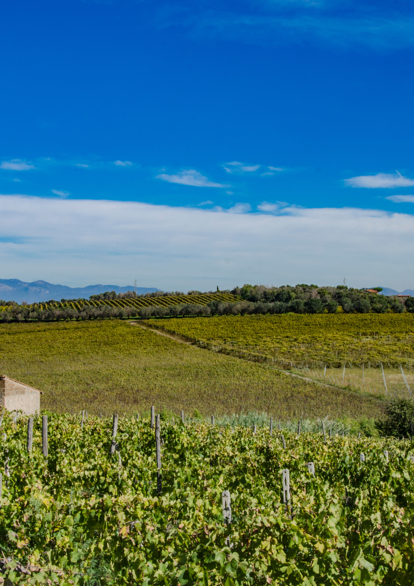

Frascati
A Volcanic Terroir
Frascati
Un Terroir Vulcanico
A volcanic terroir read on the northern slopes of the Tusculum–Artemisio edifice, where the Alban Hills caldera collapse left andic soils and the cemented Peperino di Marino horizon beneath the vineyards. The dossier maps Malvasia del Lazio (Puntinata) against pedology, agroclimate and the documentary memory of the site — from the papal bull of Sergius I and the 1515 Statutes of Frascati to Sante Lancerio's Renaissance enological corpus.
Un terroir vulcanico letto sui versanti settentrionali dell'edificio Tuscolano-Artemisio, dove il collasso della caldera dei Colli Albani ha lasciato suoli andici e l'orizzonte cementato del Peperino di Marino sotto i vigneti. Il dossier mappa la Malvasia del Lazio (Puntinata) contro pedologia, agroclima e memoria documentale del sito — dalla bolla di Papa Sergio I e gli Statuti di Frascati del 1515 al corpus enologico rinascimentale di Sante Lancerio.
Read the extract